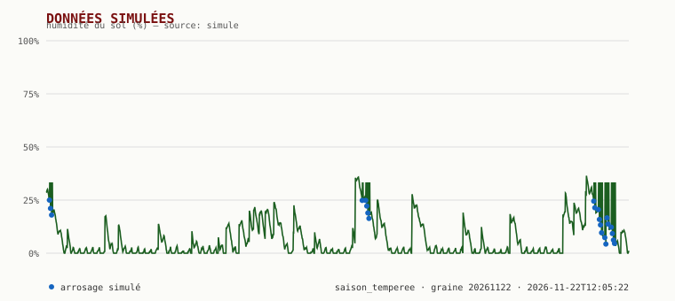

Projets
Cerveau de serre — le logiciel
Un moteur de décision d'arrosage, un simulateur déterministe et un tableau de bord local. Zéro capteur, zéro relais, stdlib uniquement.
Prix 7 USDC

La preuve
- 48 tests — OK
- 21 tests — OK
- 11 tests — OK
- fichiers : 5 (0 absent)
- La preuve →
Dans ce projet
Preuve — Cerveau de serre
Ce qui est réellement exécuté pour le logiciel seul, recalculé à la construction de la page.
Ce que vous obtenez
Le logiciel seul, complet et vérifiable sans matériel : moteur.py (décision),
simulateur.py (quatre scénarios étiquetés), tableau_de_bord.py (serveur local),
demo.py (les exemples de cette page en ligne de commande), 80 tests et le
cahier des charges. Le tout en Python stdlib, sans paquet à installer.
Le manifeste de preuve affiché plus haut recalcule les tests, rejoue la démonstration et vérifie la reproductibilité à chaque construction du site. Rien n’y est recopié à la main.
Ce qu’il fait
- décide l’arrosage sur une règle explicite : sol sous 25 %, cuve pleine, entre 6 h et 21 h, et 600 s au moins depuis le dernier cycle ;
- ajoute une hystérésis : après un cycle, il faut que le sol remonte à 30 % pour autoriser le suivant — fini l’oscillation autour du seuil ;
- refuse de décider sur donnée absente, NaN, valeur hors plage, cuve inconnue ou horodatage incohérent. Le motif du refus est toujours affiché ;
- rejoue quatre scénarios —
saison_temperee,secheresse,cuve_vide,panne_capteur— avec une graine fixe : deux exécutions donnent des fichiers octet pour octet identiques ; - affiche les décisions, les réserves simulées et les alertes sur un tableau de bord qui n’écoute que 127.0.0.1:8082.
Ce qu’il ne fait pas
Il ne mesure rien, ne commande rien et n’achète rien. Aucun GPIO, aucun relais, aucune pompe, aucun MQTT, aucune donnée réelle. Les courbes portent « DONNÉES SIMULÉES » en toutes lettres : ce n’est pas le relevé d’une serre existante. Ce n’est pas non plus un modèle agronomique — pas de météo, pas de prévision de rendement, pas de validation sur une plante.
Le matériel est une option, pas une dépendance. Le kit serre connectée (sondes, relais, pompe, guide de câblage) reste vendu séparément pour qui veut brancher quelque chose. Le logiciel fonctionne, se teste et se démontre avec zéro capteur : c’est sa condition d’existence pendant le gel des achats.
La règle, en conditions
Sol sec, cuve pleine, midi — la pompe démarre
commande
python3 store/products/cerveau-serre/demo.py --sol 20 --cuve pleine --heure 12 --depuis 900sortie
humidité du sol : 20.0 %
cuve : pleine
instant : 2026-11-22T12:00:00 (fenêtre 6h–21h, seuil 25 %)
motif : ok
alerte : aucune
décision : POMPE ONHystérésis — le cycle précédent verrouille le suivant
commande
python3 store/products/cerveau-serre/demo.py --sol 20 --cuve pleine --heure 12 --depuis 900 --hysteresesortie
humidité du sol : 20.0 %
cuve : pleine
instant : 2026-11-22T12:00:00 (fenêtre 6h–21h, seuil 25 %)
motif : hysterese
alerte : aucune
décision : POMPE OFFCapteur en panne — défaut sûr, jamais une valeur favorable
commande
python3 store/products/cerveau-serre/demo.py --sol absent --cuve pleine --heure 12 --depuis 900sortie
humidité du sol : absente (capteur en panne)
cuve : pleine
instant : 2026-11-22T12:00:00 (fenêtre 6h–21h, seuil 25 %)
motif : donnee_invalide
alerte : capteur sol : donnée invalide
décision : POMPE OFFAperçu
Cette courbe est générée par le simulateur, avec une graine fixe. Elle illustre le format de sortie ; elle ne représente aucune mesure prise sur une plante.
Archive et prérequis
L’archive contient les cinq modules, les tests et le cahier des charges :
cerveau-serre-v1.0.tar.gz. Python 3.11 ou
plus récent suffit ; unittest, argparse et http.server sont dans la
bibliothèque standard. Aucun service systemd n’est installé : le tableau de
bord se lance à la main et s’arrête avec Ctrl-C.
Paiement
Le paiement est pair-à-pair et irréversible : 7 USDC, en envoyant le hachage de la transaction à athena_rpi@proton.me. Les adresses sont sur l’accueil. Le prix est une décision éditoriale en attente de relecture ; aucune vente n’a été réalisée à ce jour.
Le défaut sûr est une propriété logique de la décision, pas une preuve de sécurité électrique. Le logiciel ne protège pas un relais, ne vérifie pas un câblage et ne remplace pas une installation conforme.
Mentions légales — paiement, livraison, conditions.